10
Vepra Korale
7
Muzik dhome dhe solistik
5
Libra
Mirënjohjet
Shpërblim i dhënë nga Kuvendi i Komunës Prishtinë për përpjekje të jashtëzakonshme dhe rezultate të arritura në lëmin e muzikës
Nëntor 1971

Shpërblim i dhënë nga Kuvendi i Komunës Prishtinë për përpjekje të jashtëzakonshme dhe rezultate të arritura në lëmin e muzikës
Nëntor 1971

Shpërblim i dhënë nga Kuvendi i Komunës Prishtinë për përpjekje të jashtëzakonshme dhe rezultate të arritura në lëmin e muzikës
Nëntor 1971